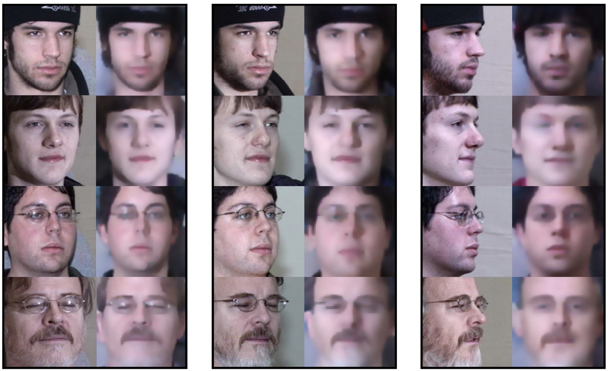

|
Xiaolong Yang （杨小龙）
|
Works
| Dec.2023 - Now |
文生视频-双语视文CLIP
|
| Aug.2023 - Dec.2023 |
业务大模型(金融)-预训练、SFT的完整链路
|
| Apr.2023 - Aug.2023 |
通用大模型(混元助手)-强化学习：RM、PPO和DPO
|
| Feb.2023 - Apr.2023 |
业务大模型(广告)-营销话术的SFT和强化学习
|
| Jan.2023 - Feb.2023 |
文生图-SOTA的复现以及超越性能的改造
|
| Oct.2022 - Feb.2023 |
人脸识别-工业应用的高难度case解决方案
|
| Aug.2022 - Oct.2022 |
隐私保护计算-大数据加密的高精度概率回归模型
|
| Jun.2022 - Aug.2022 |
广告特征工程-视文相关性和精排特征实验
|
Biography
I am currently a researcher at Data Platform, Tencent. I received my PhD degree at Academy of Mathematics and Systems Science of the Chinese Academy of Sciences (AMSS, CAS) and University of Chinese Academy of Sciences (UCAS) . My supervisor is Prof. Xiaohong Jia . Before that, I received my Bachelor's degree of Information and Computing Science from Northwestern Polytechnical University (NWPU) in 2017.
My current research spot is AIGC, including large models and multi-modality. My research interest also includes computer graphics and computer vision. My resume can be found [ here ].
Publications
|

|
LARNeXt: End-to-End Lie Algebra Residual Network for Face Recognition
Xiaolong Yang, Xiaohong Jia, Dihong Gong, Dong-Ming Yan, Zhifeng Li, Wei Liu IEEE Transactions on Pattern Analysis and Machine Intelligence(T-PAMI), Vol.45, No.10, pp.11961 - 11976, 2023. [Project Page] [PDF] [Code] [Supplement] [Slides] |
/Fig0_headpic.png)
|
LARNet: Lie Algebra Residual Network for Face Recognition
Xiaolong Yang, Xiaohong Jia, Dihong Gong, Dong-Ming Yan, Zhifeng Li, Wei Liu In Proceedings of the 38th International Conference on Machine Learning (ICML2021) [Project Page] [PDF] [Code] [Supplement] [Slides] |
/res.png)
|
6D Object Pose Estimation in Cluttered Scenes from RGB Images
Xiaolong Yang, Xiaohong Jia, Yuan Liang, Lubin Fan Journal of Computer Science and Technology (JCST), Vol.37, No.3, pp.719-730, 2022. [PDF] [Code] [Slides] |
/res.jpg)
|
Simple Primitive Recognition via Hierarchical Face Clustering
Xiaolong Yang, Xiaohong Jia Computational Visual Media (CVM), Vol.6, No.4, pp.431-443, 2020. [PDF] [Code] [Patent] |
/res.png)
|
6D Pose Estimation with Two-stream Net
Xiaolong Yang, Xiaohong Jia ACM SIGGRAPH Posters, No.40, pp.1-2, 2020. [PDF] [Code] [Slides&Talk] |
/res.png)
|
Real-Time Facial Pose Estimation and Tracking by Coarse-to-Fine Iterative Optimization
Xiaolong Yang, Xiaohong Jia, Mengke Yuan, Dong-Ming Yan Tsinghua Science and Technology (TST), Vol.25, No.5, pp.690-700, 2020. [PDF] [Code] |
/res.png)
|
Physical Model Analysis and Body Shape Modification of Platform Diving （跳台跳水的物理模型分析和体型修正）
Xiaolong Yang, RongPing Shen, Ziyin Zhang First Prize of the 15th China Post-Graduate Mathematical Contest in Modeling, recommended to Journal of Mathematics in Practice and Theory, Vol.49, No.16, pp.35-45, 2019. [PDF] [Prize] |
Honorary Awards
| 2018 | First Prize of the 15th China Post-Graduate Mathematical Contest in Modeling [ Top 1% ] |
| 2019 | Pacemaker to Merit Student of CAS (中科院三好学生标兵) [ Top 1% ] |
| 2020-2022 (3 years) | Excellent Merit Student of CAS (中科院优秀三好学生) [2020, 2021,2022] |
| 2021 | National Scholarship (国家奖学金) [ Top 1% ] |
Research Experiences
| Sep.2020 - Sep.2021 | Visting student (Rhino-Bird Program), Tencent Technologies Co., Ltd. (Shenzhen), directed by Dr. Zhifeng Li |
| Nov.2019 - Mar.2020 | Intern student (Innovative Research Program), Alibaba Group (Beijing). |
| Mar.2017 - Sep.2021 | Visiting student, National Laboratory of Pattern Recognition(NLPR), Institute of Automation, Chinese Academy of Sciences(CASIA) (Beijing), directed by Prof. Dong-Ming Yan |
Academic Services
| Conference Reviewer： | NeurIPS, ICML, ICLR, CVPR, ICCV, ECCV, AAAI, CVM ... |
| Journal Reviewer： | T-PAMI, T-CSVT, T-NNLS, Neurocomputing, The Visual Computer ... |